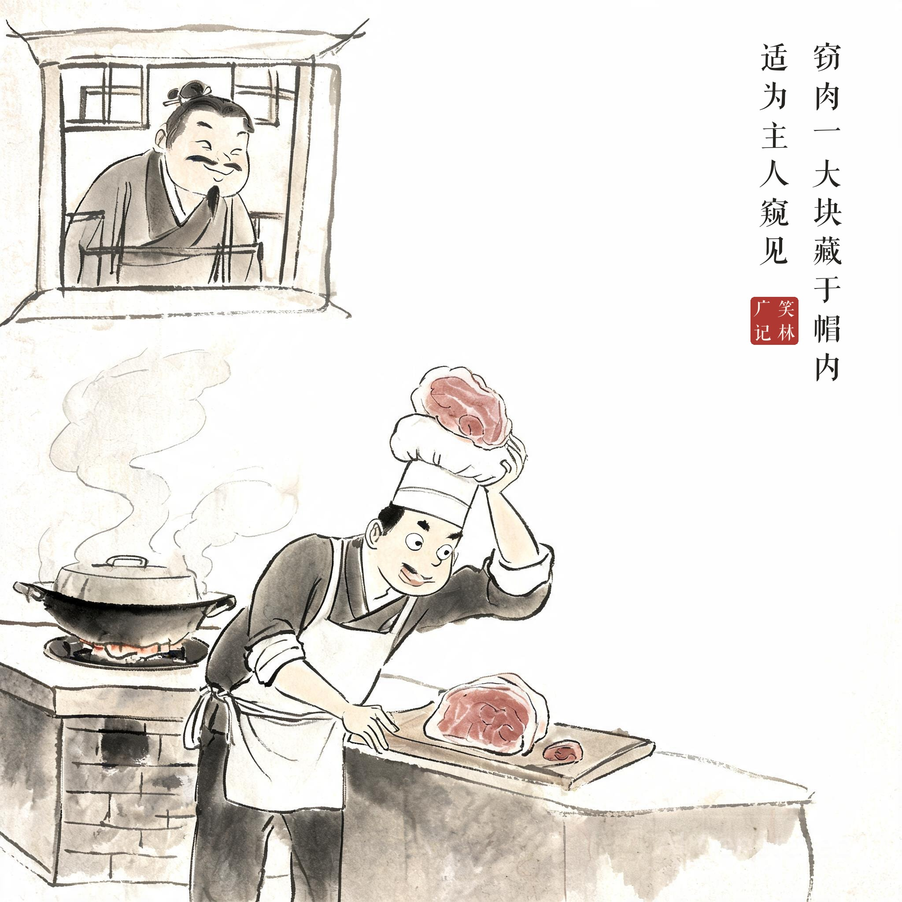
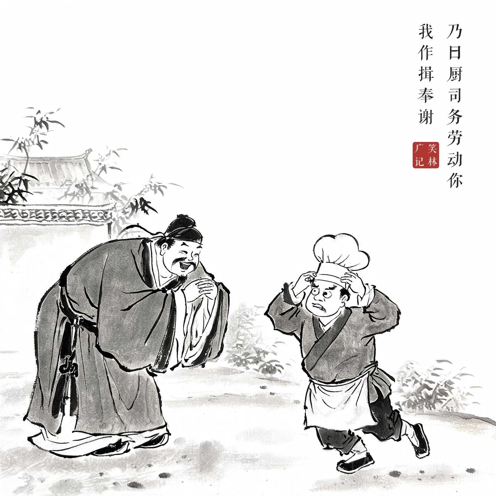
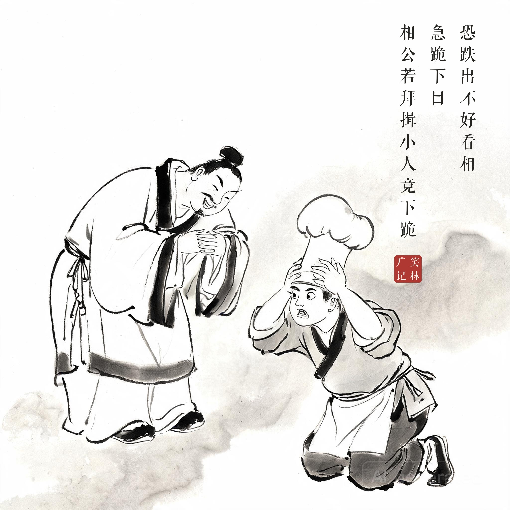

《笑林广记 · 术业部》（[清]游戏主人纂集）
厨子往一富家治酒，窃肉一大块，藏于帽内。适为主人窥见，有意作耍他拜揖，好使帽内肉跌下地来。乃曰："厨司务，劳动你，我作揖奉谢。"厨子亦知主人已觉，恐跌出不好看相，急跪下曰："相公若拜揖，小人竟下跪。"
一个厨子到富人家办酒席，偷了一大块肉藏在帽子里，恰好被主人看见。主人存心要作弄他，假意拱手说："厨师傅，辛苦了，我作个揖谢你。"厨子也知道被察觉了，担心一弯腰帽子里的肉会掉出来，急忙跪下说："您要是作揖，我就干脆下跪了。"
偷藏、将计就计的"作揖"试探、到厨子先发制人地下跪——你弯腰我就下跪，"礼多人不怪"的攻防三回合。